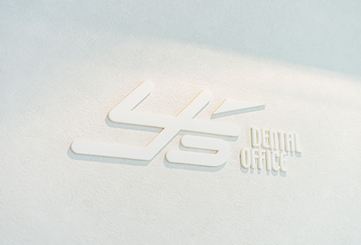
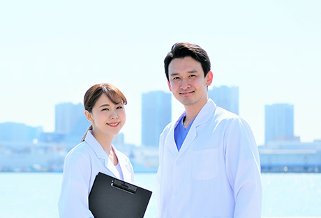

患者様目線の医院づくりに努めています
町田市の歯医者「ワイズデンタルオフィス」ではスタッフ一同、患者様の立場に立った医院づくりを心掛けています。こちらでは、当院の院長やスタッフについて、また求人情報もご紹介します。お口についてのお悩みがありましたら、どうぞわたしたちにご相談ください。

院長・スタッフ紹介
院長紹介
院長杉山靖史
| 略歴 | 1969年1月 東京都生まれ 1988年4月 神奈川歯科大学入学 1994年3月 神奈川歯科大学卒業 1994年4月 神奈川歯科大学付属病院 総合診療科（研修生）入局 1996年4月 開業医に勤務 1996年 九州歯科大 名誉教授横田誠先生に師事 横田式デンチャーを習得 2002年8月 ワイズデンタルオフィス開業 2015年11月 UCLA Endodontic Mentorship Program認定 2018年6月 Toronto Endodontic Curriculum受講 2018年9月 UCLA Perio Implant Continuing Dental Education認定 |
|---|---|
| 所属学会・認定資格 | 日本歯科補綴学会 会員 |
| 研究実績・論文 |
|
取得したホワイトニングの特許
| 発明の名称 | 変色歯牙用漂白剤および漂白法 |
|---|---|
| 公開番号 | 特開2003-221322（P2003-221322A） |
| 公開日 | 平成15年8月5日（2003.8.5） |
スタッフ紹介
求人情報

ワイズデンタルオフィスでは、常勤歯科医師を募集しています。私たちとともに、この地域の歯科医療を支えてくださる方を求めています。
当院では、「清掃性」「メインテナンス性」「永続性」の高い治療をコンセプトとし、CTやマイクロスコープ、セレックシステム、CO2レーザー、PRP、院内ラボといった先端設備を導入。ここ町田の皆様に高度な歯科医療をご提供できる体制を整えています。
歯科医師としてのビジョン実現のための支援もいたします。向上心のある方からのご応募をお待ちしています。
院長からのメッセージ
当院では「インフォームドコンセント（説明と同意）」を重視するとともに、患者様の歯科に対する意識向上に取り組んでいます。また院内にはCTやマイクロスコープ、セレックシステム、CO2レーザー、PRP、院内ラボなど先端設備が整っていますので、より高度な技術を習得していただけることと思います。
応募された方のビジョンを伺い、当院がどういったサポートができるかをしっかり検討します。モチベーションが高く、前向きな方のご応募をお待ちしています。
募集要項
| 募集職種 | 常勤歯科医師 |
|---|---|
| 勤務地 | 〒194-0022 東京都町田市森野1-24-13 ギャランフォトビル2F 小田急線「町田駅」から徒歩3分 JR横浜線「町田駅」から徒歩5分 |
| 診療メニュー | 一般歯科、予防歯科、口腔外科、セラミック治療、小児歯科、矯正歯科、3Mix法、入れ歯治療、ブリッジ治療、インプラント治療、無痛治療、ホワイトニング、歯周病治療、レーザー治療、スポーツ歯科、根管治療、フルマウス治療 など |
| 年齢・経験年数 | 不問 |
| 勤務時間 | 月・火・水・金 9：30～19：00 土 9：30～18：00 |
| 休診日 | 木曜、日曜、祝日（完全週休2日） |
| 給与 | 応相談 |
| その他 | 賞与支給、退職金制度、交通費全額支給、年末年始および夏季休暇、年次有給休暇、学会および講習会出席費用は院内規定により一部支給、開業支援手当あり |
| 採用予定日 | 即日勤務可能（ただし、試用期間あり） |
| スタッフ人数 | 5名（常勤医師1名、歯科衛生士2名、歯科助手2名） |